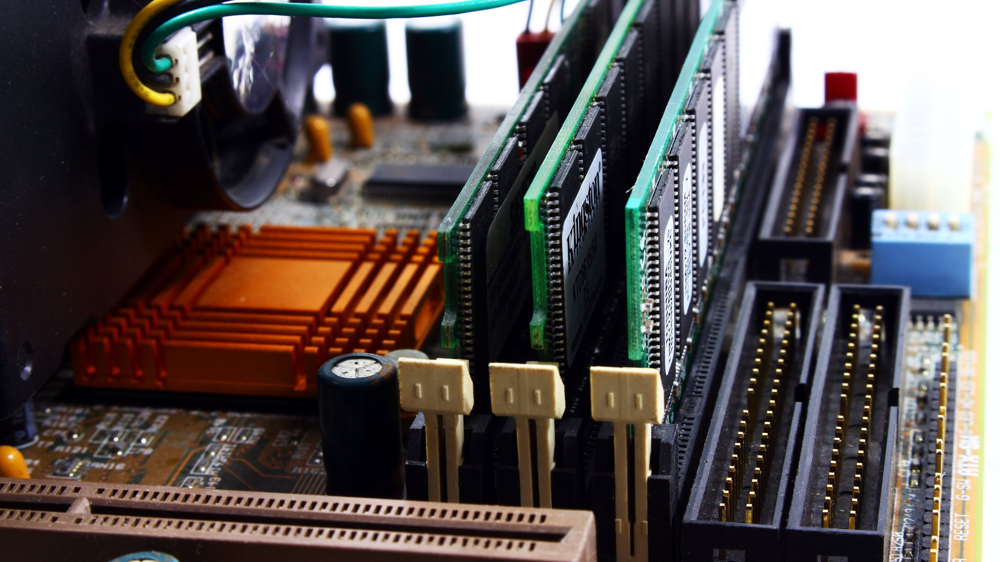
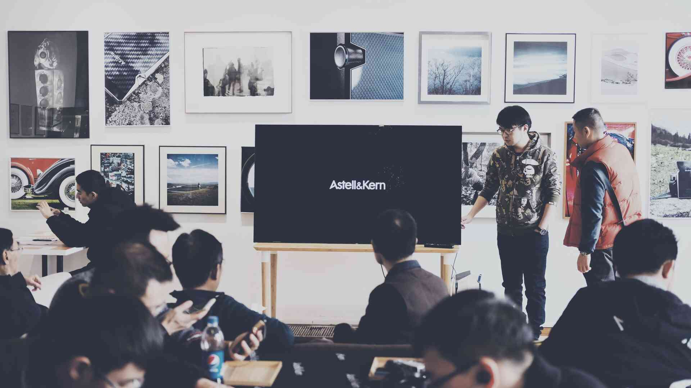
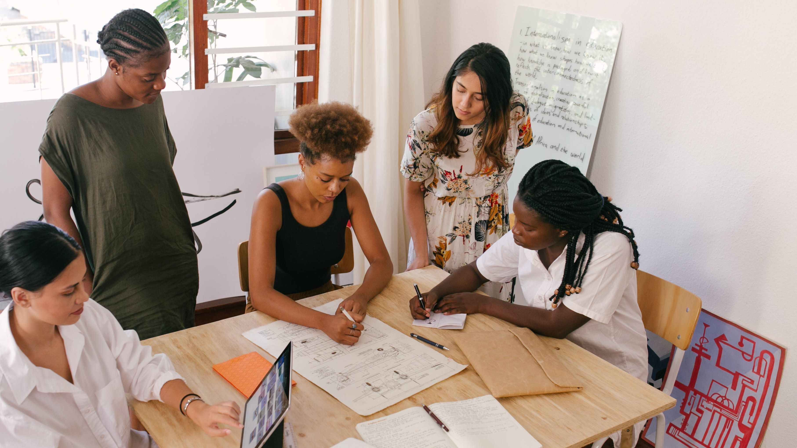

ALBUM
Materi Sistem & Teknologi Informasi
Materi Kuliah Sistem & Teknologi Informasi Universitas Islam Nahdlatul Ulama Jepara
Pertemuan ke - 1
Sub CPMK
- Mampu membuat kesepakatan dalam aturan-aturan perkuliahan.
- Mampu menjelaskan definisi computer, pengolahan data elektronik, sistem komputer dan kemampuan computer.
Pokok Bahasan
- Kontrak Kuliah.
- Gambaran umum sistem komputer beserta komponen-komponennya : Definisi computer Pengolahan data elektronik Sistem Komputer Kemampuan computer
Pertemuan ke - 2

Sub CPMK
- Mampu menyebutkan dan menjelaskan jenis dan fungsi perangkat input dan output.
- Mampu menyebutkan dan menjelaskan fungsi dan cara kerja perangkat pemrosesan.
- Mampu menyebutkan dan menjelaskan jenis, fungsi serta cara kerja perangkat penyimpanan.
Pokok Bahasan
- Macam-macam perangkat keras komputer : Perangkat input Perangkat output Perangkat pemrosesan Perangkat penyimpanan
Pertemuan ke - 3
Sub CPMK
- Mampu menyebutkan dan menjelaskan perkembangan perangkat lunak.
- Mampu membedakan jenis dan fungsi perangkat lunak sistem operasi dan perangkat lunak.
Pokok Bahasan
- Sejarah perkembangan perangkat lunak dan mengenal macam-macam software
- Perkembangan perangkat lunak.
- Perangkat lunak sistem operasi.
- Perangkat lunak aplikasi
Pertemuan ke - 4
Sub CPMK
- Mampu mengoperasikan MS-Word.
- Mampu menyelesaikan tugas mengetik naskah dengan benar.
Pokok Bahasan
- Praktikum
Pertemuan ke - 5
Sub CPMK
- Mampu mengoperasikan MS-Excel.
- Mampu membuat table dengan benar.
- Mampu menggunakan rumus-rumus dasar dalam excel dalam menyelesaikan tugas
Pokok Bahasan
- Praktek MS-Excel.
Pertemuan ke - 6
Sub CPMK
- Mampu mengoperasikan MS-Excel.
- Mampu membuat table dengan benar.
- Mampu menggunakan rumus-rumus dasar dalam excel dalam menyelesaikan tugas
Pokok Bahasan
- Praktek MS-Excel.
Pertemuan ke - 7
Sub CPMK
- Mampu memahami teknologi website Html, Css & Javascript dalam membuat blog.
- Memiliki blog pribadi yang publikasikan dan di kelola dengan benar.
Pokok Bahasan
- Praktek membuat blog pribadi.
EVALUASI TENGAH SEMESTER
Pertemuan ke - 9
Sub CPMK
- Mampu mengoperasikan Content Management System (CMS) dalam membuat blog.
- Memiliki blog pribadi yang publikasikan dan di kelola dengan benar.
Pokok Bahasan
- Praktek membuat blog pribadi.
Pertemuan ke - 10
Sub CPMK
- Mampu mengoperasikan Content Management System (CMS) dalam membuat blog.
- Memiliki blog pribadi yang publikasikan dan di kelola dengan benar.
Pokok Bahasan
- Praktek membuat blog pribadi.
Pertemuan ke - 11

Sub CPMK
- Mampu mengoperasikan Power point.
- Mampu membuat materi tayang yang menampilkan teks, gambar, suara, animasi dan video.
Pokok Bahasan
- Praktek Power Point.
Pertemuan ke - 12
Sub CPMK
- Mampu menyebutkan dan menjelaskan sistem basis data.
- Mampu menjelaskan DBMS.
- Mampu membuat diagram alir sistem.
- Mahasiswa membuat tugas (tulisan) tentang dasar pengolahan data dan diupload di blog masing-masing.
Pokok Bahasan
- Praktek membuat dasra-dasar pengolhana data.
Pertemuan ke - 13

Sub CPMK
- Mampu menyebutkan dan menjelaskan konsep dasar sistem.
- Mampu menjelaskan siklus hidup sistem.
- Mampu mengalisis pendekatan (aturan bisnis ) dalam pengembangan sistem informasi.
- Mahasiswa membuat tugas (tulisan) tentang dasar sistem informasi dan diupload di blog masing-masing.
Pokok Bahasan
- Dasar Sistem Informasi
- sistem
- sistem informasi.
- sistem informasi manajemen.
- Pengembangan sistem informasi.
- Model pendekatan pengembangan sistem informasi.
Pertemuan ke - 14

Sub CPMK
- Mampu menyebutkan dan menjelaskan dasar dasar jaringan computer.
- Mampu menyebutkan dan menjelaskan dasar dasar komunikasi data.
- Mampu menjelaskan dan menggambarkan transmisi data Mahasiswa membuat tugas (tulisan) tentang dasar jaringan computer dan komunikasi data dan diupload di blog masing-masing.
Pokok Bahasan
- Dasar Jaringan Komputer dan Komunikasi Data :
- Dasar-dasar jaringan komputer.
- Dasar-dasar komunikasi data.
- Transmisi data.
- Bentuk sistem komunikasi data.
Pertemuan ke - 15
Sub CPMK
- Pemahaman Materi ke: 1-13
- Hasil latihan-latihan
- Hasil Tugas-tugas
Pokok Bahasan
- Tingkat keterserapan materi STI :
- Kesesuaian hasil latihan.
- Kesesuaian tugas-tugas.